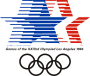

홈 > 브랜드 매거진 > LA 1984
LA 1984
LA 1984(LA '84)는 1984년 로스앤젤레스 하계올림픽의 브랜드다. 이 대회는 근대 올림픽 이래 사실상 국가 자금 없이 민간 자본으로 치러진 첫 대회로, 대부분 기존 시설을 임시로 활용해야 했다. 흩어진 베뉴를 값싸고 대담하게 하나로 묶기 위해 데버라 서스먼과 폴 프레자의 스튜디오(Sussman/Prejza)가 건축가 존 저드와 함께 환경 그래픽 'Look of the Games'를 총괄했다.
산업 분야 스포츠·아웃도어 · 공개 등급 편집 검수 · 브랜드 평가 4 ★

한눈에 보는 브랜드
LA 1984(LA '84)는 1984년 로스앤젤레스 하계올림픽의 브랜드다. 이 대회는 근대 올림픽 이래 사실상 국가 자금 없이 민간 자본으로 치러진 첫 대회로, 대부분 기존 시설을 임시로 활용해야 했다.
흩어진 베뉴를 값싸고 대담하게 하나로 묶기 위해 데버라 서스먼과 폴 프레자의 스튜디오(Sussman/Prejza)가 건축가 존 저드와 함께 환경 그래픽 'Look of the Games'를 총괄했다.
브랜드 관점
엠블럼과 도시 환경 그래픽이라는 두 층위가 한 대회 안에서 공존한 점이 이 아카이브의 핵심이다. 정중앙의 포인트 마크인 스타스 인 모션은 세 개가 겹친 별과 수평 줄무늬로 경쟁의 정신과 질주의 속도를 압축했고, 그 위에 도시 전체를 덮은 슈퍼그래픽이 별개의 시각 언어로 작동했다.
슈퍼그래픽은 단순히 크기가 큰 것이 아니라 건축물보다 더 큰 존재감을 의도한 개념으로 설계됐다. 마젠타를 신호색으로 삼고 아쿠아·버밀리언·노랑·보라 같은 비관습적 다색 팔레트를 쓴 선택은 적·백·청의 애국색 관성에서 의도적으로 이탈한 결정이며, 저예산 임시 자재로 광역 도시를 하나의 정체성으로 묶어낸 방법론 자체가 기록 대상이다.
시작과 성장
엠블럼은 1980년 8월 4일 공개됐고, 34개 미국 디자인 회사 가운데 선정된 로버트 마일스 러니언 어소시에이츠가 맡았다. 작업팀은 약 사천 건의 시안을 만든 뒤 사백여 점으로 추려 세 별 모티프를 다듬어 최종 스타스 인 모션 형태에 도달했다.
별은 인류의 최고 지향을, 별의 반복은 경쟁의 정신을, 수평 막대는 선수가 탁월함을 좇는 속도를 상징했고 청·백·적은 일·이·삼위 시상의 전통색에서 가져왔다. 대회 전반의 룩은 서스먼/프레자와 저드 파트너십이 공동 디렉팅했다.
데버라 서스먼이 주도한 다색 팔레트는 멕시코·일본·인도·중국 등 태평양 연안과 라틴아메리카, 지중해 문화의 축제 색에서 영감을 얻어 로스앤젤레스의 다문화를 반영했고, 이 접근은 페스티브 페더럴리즘으로 불렸다.
브랜드 아이덴티티
'축제적 연방주의(Festive Federalism)'로 불린 이 체계는 성조기의 별과 줄무늬를 비전통적 색채와 결합해 남부 캘리포니아의 다문화성을 표현했다. 마젠타·버밀리언·아쿠아·크롬 옐로를 중심으로 한 열한 가지 색 팔레트와, 소노튜브(골판지 원통 기둥)·컬러 비계·기둥·배너 같은 임시 '부품 키트(kit-of-parts)'로 28개 베뉴 전역을 변환했다.
한편 별 셋과 수평 속도선으로 이뤄진 'Stars in Motion' 엠블럼은 환경 디자인과 별개로 디자인 회사 로버트 마일스 러년 어소시에이츠가 맡았다.
제품과 서비스
중앙 엠블럼은 세 별과 열세 줄무늬로 구성됐고, 룩 시스템은 마젠타 신호색을 중심으로 한 열한 가지 색 체계와 별·배너·줄무늬 기하 요소를 묶은 키트오브파츠였다. 임시 비계와 원통 기둥 같은 저비용 자재로 만든 슈퍼그래픽이 마흔세 곳의 아트 사이트, 스물여덟 곳의 경기장, 세 곳의 선수촌에 일관되게 적용됐고, 픽토그램과 그래픽 표준 매뉴얼까지 통합 체계로 정리됐다.
사람들
현재 상태
임시·저비용 디자인으로 거대 행사와 광역 도시를 묶을 수 있음을 입증한 사례로 남아 이후 대회와 도시 디자인에 영향을 줬고, 거리 배너 프로그램은 표준 관행이 됐다. 이 다색 유산은 후속 로스앤젤레스 대회 정체성 논의에서도 계속 참조된다.
타임라인
BI/CI 변천사
자주 묻는 질문
LA 1984의 브랜드 아이덴티티는 무엇인가요?
'축제적 연방주의(Festive Federalism)'로 불린 이 체계는 성조기의 별과 줄무늬를 비전통적 색채와 결합해 남부 캘리포니아의 다문화성을 표현했다.
LA 1984의 대표 제품은 무엇인가요?
중앙 엠블럼은 세 별과 열세 줄무늬로 구성됐고, 룩 시스템은 마젠타 신호색을 중심으로 한 열한 가지 색 체계와 별·배너·줄무늬 기하 요소를 묶은 키트오브파츠였다.
LA 1984는 현재 어떤 상태인가요?
임시·저비용 디자인으로 거대 행사와 광역 도시를 묶을 수 있음을 입증한 사례로 남아 이후 대회와 도시 디자인에 영향을 줬고, 거리 배너 프로그램은 표준 관행이 됐다.
함께 읽을 브랜드
 스포츠·아웃도어 · 편집 검수Calgary 1988
스포츠·아웃도어 · 편집 검수Calgary 1988Calgary 1988는 1979년에 기록된 Olympic Design 계열의 브랜드 아이덴티티 사례입니다. Gary W. Pampu, Justason & Taven...
Os
Osaka Candidate City 2008
스포츠·아웃도어 · 편집 검수Osaka Candidate City 2008Osaka Candidate City 2008는 2000년에 기록된 Olympic Design 계열의 브랜드 아이덴티티 사례입니다. Hakuhodo가 아이덴티티 작업...
 스포츠·아웃도어 · 편집 검수Sydney 2000
스포츠·아웃도어 · 편집 검수Sydney 2000Sydney 2000는 1998년에 기록된 Olympic Design 계열의 브랜드 아이덴티티 사례입니다. FHA Image Design, Saunders Desig...
 스포츠·아웃도어 · 편집 검수파타고니아
스포츠·아웃도어 · 편집 검수파타고니아파타고니아는 아웃도어 브랜드이면서 동시에 소비를 줄이라는 역설적 메시지로 신뢰를 쌓은 브랜드다. 제품을 파는 기업이지만 브랜드의 설득력은 자연, 책임, 오래 쓰는 태...
Ni
Nike Run
스포츠·아웃도어 · 편집 검수Nike Run나이키 러닝 라인 전용 시각 시스템은 나이키의 전 세계 러닝 활동을 하나의 정체성으로 묶는다. 핵심은 1980년대 나이키 락업에서 출발해 브랜드 이름 자리에 선언적인...
Me
Metro Bilbao
스포츠·아웃도어 · 편집 검수Metro Bilbao Metro Bilbao 는 1988년에 기록된 Transport 계열의 브랜드 아이덴티티 사례입니다. Otl Aicher가 아이덴티티 작업의 디자이너로 기록되어 있습...
 스포츠·아웃도어 · 편집 검수Moscow 1980
스포츠·아웃도어 · 편집 검수Moscow 1980Moscow 1980는 1976년에 기록된 Olympic Design 계열의 브랜드 아이덴티티 사례입니다. Vladimir Arsentiev, Oleg Bezukho...
 스포츠·아웃도어 · 편집 검수Nederlandse Spoorwegen
스포츠·아웃도어 · 편집 검수Nederlandse SpoorwegenNederlandse Spoorwegen는 1968년에 기록된 Transport 계열의 브랜드 아이덴티티 사례입니다. Gert Dumbar, Tel Design가 아...